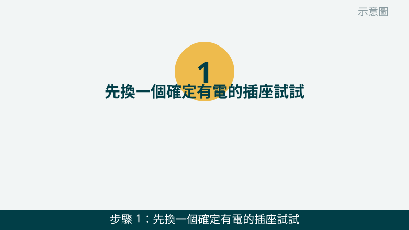
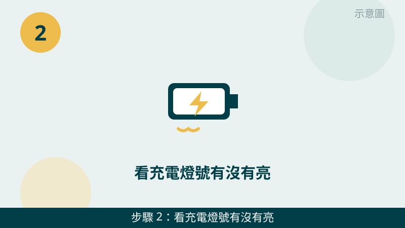
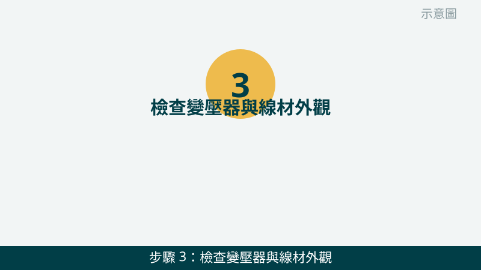
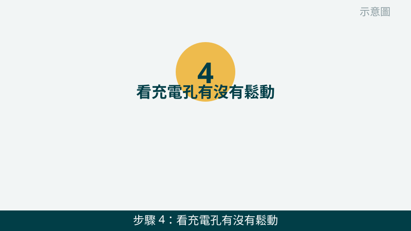
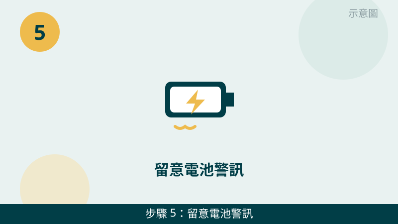
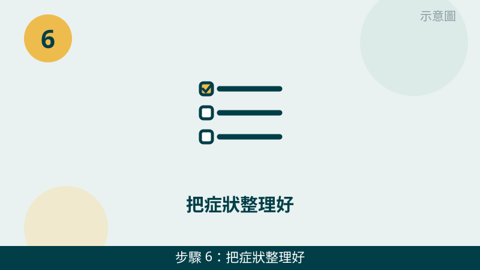

筆電插著電卻沒反應，先別急著認定是筆電壞了。充電是一條鏈：插座、變壓器、線材、充電孔、電池，任何一環斷掉都會充不進去。由外往內一步一步排除，通常很快就能縮小範圍。
開始之前先跟您說明一個判斷原則：「完全沒反應」和「有反應但充不滿」是兩種故事。完全沒反應，先查插座、變壓器、線材和充電孔；有燈號、有充電圖示但電量上不去，再往電池老化或供電不足的方向查。您先看屬於哪一種，檢查會更有方向。
充電燈號與變壓器先傳給我們看
把充電燈號、變壓器與線材接頭拍下來傳 LINE，哪個環節最可疑，一看就比較清楚。先免費評估、報價透明，確認後再預約維修。
筆電充不進去自救檢查清單（由外往內）
- 1. 先換一個確定有電的插座試試。請把變壓器換到另一個插座，最好是平常手機充電確定能用的那一個，插好後等一分鐘再看燈號。怎麼判斷：換插座就亮燈、開始充電，代表原本的插座或延長線有問題；換了還是沒反應，再往下查。

示意圖（非官方截圖） - 2. 看充電燈號有沒有亮、是什麼顏色。請看筆電機身或鍵盤附近的充電指示燈：插電前後有沒有變化、是恆亮還是閃爍，順手把燈號拍下來。怎麼判斷：燈有亮代表電有進到筆電，問題可能在電池或系統；燈完全不亮，代表電根本還沒進來，要往變壓器、線材和充電孔查。

示意圖（非官方截圖） - 3. 檢查變壓器與線材外觀，並用手背感覺溫度。請看變壓器本體與線材兩端接頭：外皮有沒有破損、接頭有沒有彎折或鬆脫，充電一陣子後用手背輕碰變壓器感覺溫度。怎麼判斷：溫溫的是正常的；線材破皮、接頭歪斜就先不要再用，拍照問我們。

示意圖（非官方截圖） - 4. 看充電孔有沒有鬆動、歪斜或卡異物。請在光線好的地方看筆電的充電孔：插頭插進去會不會搖晃、要喬角度才有反應，孔裡有沒有灰塵或異物。怎麼判斷：要喬角度才充得到電，很可能是充電孔鬆動；孔裡卡東西請不要拿金屬物去挖，先拍照問我們。

示意圖（非官方截圖） - 5. 留意電池警訊：機身鼓起、觸控板翹起、電量亂跳。請看筆電底部是不是平貼桌面、觸控板有沒有被頂起來、電量是不是一下掉很快或數字亂跳。怎麼判斷：機身鼓起或觸控板翹起，很可能是電池膨脹的警訊，請立刻停用並先拍照問我們，不要自行拆卸或擠壓。

示意圖（非官方截圖） - 6. 把症狀整理好，一次拍照傳給我們。請把插座、燈號、變壓器、充電孔這四張照片，加上筆電品牌型號與「什麼時候開始充不進去」一起傳 LINE。怎麼判斷：您不用自己斷定是誰壞，照片越完整，我們越能先幫您縮小範圍，再跟您說明要不要實機檢測。

示意圖（非官方截圖）
出現這些情況，就別再自己試了
- 變壓器燙到手沒辦法久握、聞到焦味、線材外皮破損或冒煙——請立刻拔掉停用，不要再插回去測試
- 筆電底部鼓起、觸控板翹起、機身變形——可能是電池膨脹，請立刻停用，不要自行拆卸、擠壓或戳刺
- 充電孔鬆動、歪斜或插頭斷在孔裡——請先拍照問我們，不要硬拔或拿工具去挖
- 不確定變壓器規格是否相符——不要拿來路不明的變壓器亂試，規格不合可能傷到筆電，請先拍照問我們確認
如果您的筆電是電池相關警訊，建議您也看一下電池篇的說明：膨脹、續航突然變很短、電量亂跳，都是電池需要被認真看待的訊號。我們的檢測會把變壓器、充電孔與電池狀況一起確認，再報價給您。
常見問題
筆電插電完全沒反應，一定是主機板壞了嗎？
不一定。完全沒反應最常見的原因其實是插座、變壓器或線材出問題，其次才是充電孔鬆動，電池或主機板問題反而要排在後面查。先照本文第 1 到第 4 步把外面的環節排除，再來判斷裡面的零件，比較不會花冤枉錢。
變壓器很燙，還可以繼續用嗎？
溫溫的是正常的，但如果燙到手沒辦法久握，或聞到焦味、看到線材外皮破損，請立刻拔掉停用，不要再插回去測試。把變壓器與線材的照片傳給我們，我們會先幫您看狀況，再跟您說明下一步該怎麼處理。
充電燈有亮但電量一直上不去，是電池壞了嗎？
有可能是電池老化，也可能是變壓器供電不足或系統設定問題，光看燈號還不能斷定。請把燈號顏色、插著電使用時的電量變化拍下來傳給我們，先免費評估，再決定要不要實機檢測確認。
相關文章：電腦變慢卡頓・開機很久、自救百科總覽